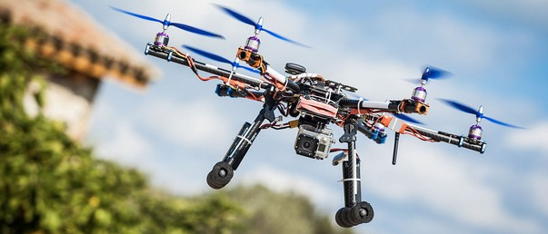
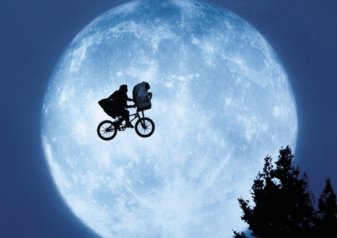
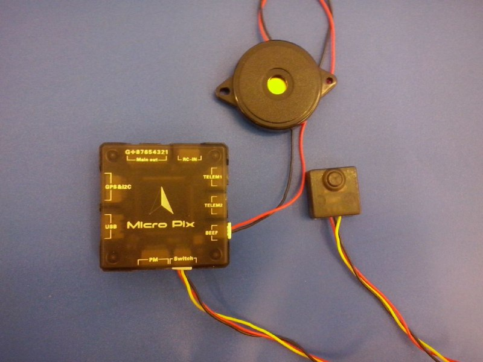
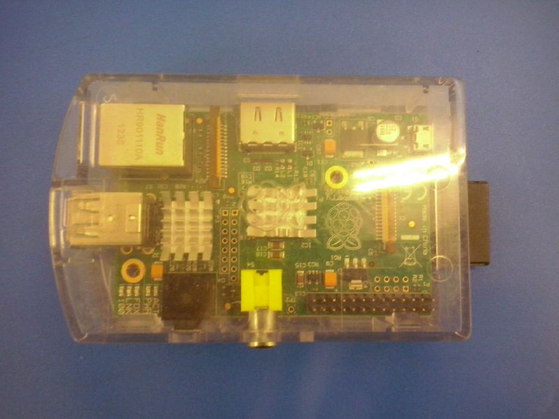
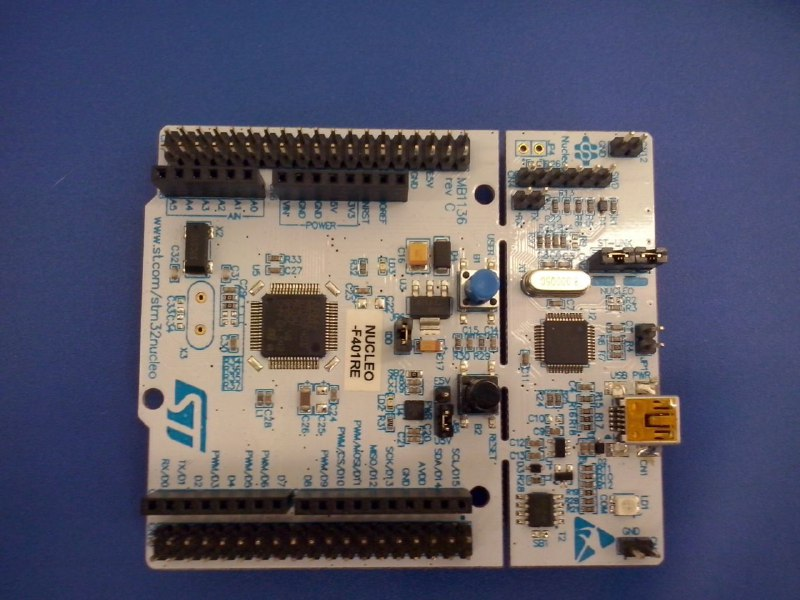
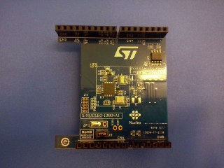
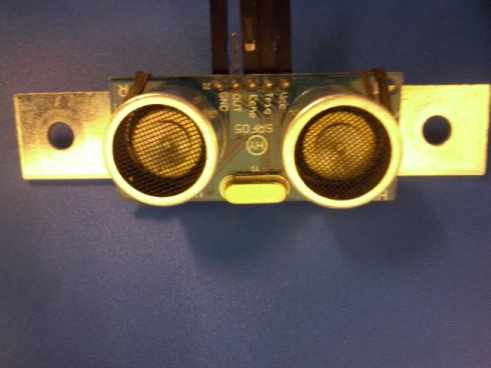

Introduzione
Veri e propri veivoli, ne esistono svariati modelli, dotati di 2 o più eliche e dispositivi vari.
Al giorno d'oggi l'uso di droni multi-rotore è in forte crescita, usati in molti ambienti moderni, dal miliatre alla fotografia...
Il problema
Il problema affrontato è quello del:
- Riconoscimento
- Tracking
Di oggetti o persone, dotando i droni multi-rotore di capacità quasi del tutto autonome per svolgere mansioni difficili da attuare per un essere umano riducendo il numero di incidenti
L'hardware
L'hardware è stato scelto per permettere a chiunque di poter raggiungere l'obiettivo prefissato grazie al costo quasi irrisorio delle componenti hardware usate...
Il drone
Costruito in casa e messo a disposizione dal mio corelatore Antonio Giambartino dell'azienda ST Microeletronics
Composto da:
- 1 frame in alluminio
- 1 gps
- 1 barometro
- 4 motori ed eliche
- 1 base in polistirolo
- 1 batteria LiPo
Scheda PixHawk
Permette di:
- Comandare i motori del multi-rotore
- Interfacciarsi con il barometro
- Interfacciarsi con il gps
- Dialogare con la GCS attraverso il protocollo MAVLink
Raspberry Pi
Il "cervello" del progetto, basato su arch. ARM consente di:
- Usare diverse distribuzioni scritte ad-hoc
- Interpretare o eseguire software scritti con linguaggi di medio-alto livello
- Interfacciarsi con i vari dispositivi in maniera semplificata
- Consentire una spesa contenuta
Abbiamo usato il modello B1 con 512Mb di RAM per mostrare l'efficienza dell'algoritmo
Scheda NUCLEO F401RE
Microcontrollore by ST, basato su arch. STM32, permette l'interfacciamento con dispositivi analogici, digitali e seriali
Programmabile attraverso l'SDK scaricabile dal sito https://mbed.org
Modulo BLE IDB04A1
Modulo aggiuntivo by ST, permette di usare la tecnologia BLE così da poter avviare il drone dalla GCS, interfacciandosi con la scheda NUCLEO connessa alla Raspberry Pi
Sensore ultrasonico HY-SRF05
Sfruttando il principio del sonar, consente di conoscere la distanza da un particolare ostacolo; usato per determinare la posizione del target consentendo al drone di fermarsi ed effettuare un landing sicuro
Bluetooth 4.0
Chiamato anche BLE, è un nuovo standard di comunicazione fra dispositivi di ultima generazione, usato in ogni genere di settore, da quello sportivo a quello videoludico consentendo prestazioni ben superiori rispetto alla versione precedente.
L'architettura prevede un master che sarà un tablet o un telefono con supporto BLE e degli slayer cioè i dispositivi che avranno il compito di inviare i dati richiesti dal master o di riceverne a loro volta.
Lo slayer si mette in ascolto aspettando una qualsiasi connessione dall'esterno, fase chiamata di Advertising. Il master invece avrà il compito di scansionare l'area cercando dispositivi compatibili
Una volta stabilita la connessione il master richiede i servizi e le caratteristiche del dispositivo, identificando gli UUIDs
Slide Backgrounds
Set data-background="#dddddd" on a slide to change the background color. All CSS color formats are supported.
Image Backgrounds
<section data-background="image.png">Tiled Backgrounds
<section data-background="image.png" data-background-repeat="repeat" data-background-size="100px">Video Backgrounds
<section data-background-video="video.mp4,video.webm">... and GIFs!
Background Transitions
Different background transitions are available via the backgroundTransition option. This one's called "zoom".
Reveal.configure({ backgroundTransition: 'zoom' })Background Transitions
You can override background transitions per-slide.
<section data-background-transition="zoom">Pretty Code
function linkify( selector ) {
if( supports3DTransforms ) {
var nodes = document.querySelectorAll( selector );
for( var i = 0, len = nodes.length; i < len; i++ ) {
var node = nodes[i];
if( !node.className ) {
node.className += ' roll';
}
}
}
}
Code syntax highlighting courtesy of highlight.js.
Marvelous List
- No order here
- Or here
- Or here
- Or here
Fantastic Ordered List
- One is smaller than...
- Two is smaller than...
- Three!
Tabular Tables
| Item | Value | Quantity |
|---|---|---|
| Apples | $1 | 7 |
| Lemonade | $2 | 18 |
| Bread | $3 | 2 |
Clever Quotes
These guys come in two forms, inline:
“The nice thing about standards is that there are so many to choose from”
and block:
“For years there has been a theory that millions of monkeys typing at random on millions of typewriters would reproduce the entire works of Shakespeare. The Internet has proven this theory to be untrue.”
Intergalactic Interconnections
You can link between slides internally, like this.
Speaker View
There's a speaker view. It includes a timer, preview of the upcoming slide as well as your speaker notes.
Press the S key to try it out.
Export to PDF
Presentations can be exported to PDF, here's an example:
Global State
Set data-state="something" on a slide and "something"
will be added as a class to the document element when the slide is open. This lets you
apply broader style changes, like switching the page background.
State Events
Additionally custom events can be triggered on a per slide basis by binding to the data-state name.
Reveal.addEventListener( 'customevent', function() {
console.log( '"customevent" has fired' );
} );
Take a Moment
Press B or . on your keyboard to pause the presentation. This is helpful when you're on stage and want to take distracting slides off the screen.
Much more
- Right-to-left support
- Extensive JavaScript API
- Auto-progression
- Parallax backgrounds
- Custom keyboard bindings